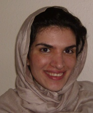

|
|
|
Browsing
Contact Us |
Campaigners |
Face to Face |
Tribune |
Interview |
News |
On the Web |
One Million |
Report
Farsi | Français | German | Italian | Spanish | العربية Also in this section
|
 In Solidarity with my Sisters in Iran: A Letter From the WestSaturday 8 September 2007 By: Shirin Saeidi Many find the One Million Signatures Campaign attractive due to the brave efforts of young women and men aiming to reconstruct the legal system into one which recognizes equality between the genders. However, it was the participatory realm of the movement which grasped my attention, for it engenders self-confidence and solidifies political will, two key components needed to buttress legal reform. As an Iranian woman raised in the Diaspora, I was legally equal to my male counterparts and knew the law to be a force which I could generally depend on as a woman during different stages of my life. However, it was the historical social perceptions of gender roles which became central to the formation of my identity and family relations. I share my story because I believe this historical moment for Iranian women, who have been politically organized through the efforts of the One Million Signatures Campaign, to be nationally and internationally transformative. The struggle for legal equality is one which is most effective in altering the status of women when amalgamated with women’s empowerment personally and privately, for having the political integrity to encounter the obstacles which we have faced historically, currently, and in the future demands that we nurture skills which support this journey. Participating in grassroots activities is one way of cultivating self-confidence and political will. By individually and collectively basing its efforts on the participation of young men and women, the One Million Signatures Campaign is fighting on two fronts: legal and social, and serving as an inspiration for women within and outside of Iranian territory. Like many fathers, mine was distant, strong and silent, and it became my daily hobby as a child to find ways of attracting his attention. He was serious, stern and strict with my sister and I; trying to make ladies out of two girls who preferred to play with trucks and boys instead of dolls, kitchen toys, and other girls. Even in my youth, I sensed that I disappointed my mother and father, refusing to adjust to and accept the typical standards for girls raised in traditional families. While my female cousins at eight or nine were able to do basic cooking and cleaning, my mother was still struggling to get my sister and I to make our beds in the morning. With my parents busy trying to fit us into our proper gender roles, I discovered my father’s enthusiasm in discussing politics. And so it was in political language that I decided I could win his affection, or perhaps sense it, for it always existed, though not easily accessible. It was at this young age that politics and love became inseparable for me, and today as an adult, I recognize how fortunate I was to learn this lesson early, for I now realize that politics is often tied to someone’s love of something. I remember sitting in front of the television watching scenes of destruction during the Iran-Iraq war, crying while my father shouted about Saddam Hussein and the United States. He would tell me about his life in Ahvaz as a child, how his father was forced to call the British ghorban (Sir), and how poor they were despite the national wealth which our country had at the time. I was mesmerized by his stories, emotion and heightened sense of social responsibility. While my sister was busy playing with dolls (she finally gave into their pressures), I was sending la’nat’s (curses) to Saddam and shouting revolutionary slogans in the living room, with my father finding my interest just as amusing as I found his. It was also during these discussions that my understanding of justice crystallized; I began to draw connections between the insanity of killing innocent human beings and the freedom of having the ability to express this assessment. I discovered that if I perceive an atrocity occurring, it was my responsibility to share, elaborate and further dissect this idea with others. I remember it being such an enabling moment the first time I shared with classmates in elementary school that I was Iranian and my country was in a terrible war which was resulting in the death of so many. It was my first experience in achieving some form of solace amidst the anger that I harbored, with societal interaction serving as the conduit in this process. In college I became interested in African-American and domestic US policy, and my father and I had new topics to discuss. Now I was in a position to give him history lessons, and I still remember his look of pride in hearing his daughter talk politics! It was years later that I realized how, during these sporadic discussions with my father, his understanding of gender changed and so did our relationship, evolving from one of confrontation to mutual understanding. He trusted my judgment, giving me space and freedoms which many of my Iranian friends did not have, and grew fond of my unmanageable nature. I came to comprehend the difficulties he faced raising two young daughters in an environment which he viewed fundamentally as unsafe; I imagined how scary it must have been for him to watch my sister and I go to college; and I respected him all the more because of this flexibility which I had previously failed to notice. I remember how he found my intense irritation at the slightest sight of injustice engaging, while my mother could not understand why I would care about social policy that had little impact on my immediate life. Remembering the bitter political realities of her lifetime, she always told me to worry about my own life and end these romantic dreams of global justice. But my father understood me, and better yet, respected my positions. Nevertheless, our relationship continued to have difficulties. I remember during visits with family and friends, my father would discretely ask me to watch my tone and not talk so much about politics, stating that it was “improper” in Iranian culture. I could not understand why privately he found my character charming but publicly regarded it as a source of shame. But I knew no other way of being, and so I continued. Becoming somewhat a stranger in my own family and the greater Iranian community, I grew closer to my political activities and studies. Like women in Iran have learned historically and are currently experiencing, isolation does not have to be a lonely moment, but a time to practice standing on your own. In college I worked with activists on everything from reparations and the African-American community to the Palestinian struggle for independence, meeting and collaborating with like-minded people while becoming more comfortable in my own skin. I learned that at times, I was just as uncomfortable with my identity as my parents were, having subconsciously internalized familial gender ideologies. The conglomeration of being radical, Iranian, a woman, and raised in the United States, resulted in clashed identities, which only further fueled my interest in writing, social service and grassroots activities, all approaches which helped clarify me for me. During breaks home from college, I would share with my parents stories of political participation and my studies, and I could see them changing and growing more accustomed to who I was. What was most fascinating was watching my mother transform through her daughters influence. She began to admire my sister’s stern attitude, her celebration of life, color, and music, all signs of joy which were considered inappropriate during our childhood. She enjoyed my love of poetry and literature, and we spent hours discussing the status of women in Iran during our discussions of Forugh Farrokhzad. I would share with my mom the difficulties African-American women faced, and how in many ways I view our struggles as Iranian women to be similar to theirs. Through these interactions, I noticed my mother challenging the traditional parameters of her marriage and gaining confidence and rights along the way. My father lost the larger-than-life image I had of him as a child, emerging as more available and tangible in my twenties. He became human and began to share his emotions, an activity often deemed unacceptable for fathers. He discussed my grandmother more often, and I learned about our family history and my father’s parents. All the superficial gender barriers in our family were slowly shattered through confrontation, mutual understanding and patience; most importantly, we grew closer in the process. It is with this personal and intellectual background that I watch the One Million Signatures Campaign from a distance. I firmly believe my story to serve as an illustration of the Campaign’s future prospects, and I know that for many young Iranian women who struggled to alter traditional gender constructs outside of Iran, political participation became a source of personal strength, providing the will to continue and to aim for comprehensive family and societal changes. In fact, one of the most exciting effects of the Campaign rests in its influence on familial relations, with inter-generational collaboration between women and men serving as a platform for altering currently held notions of gender and the ways we think about marriage, love and divorce. Through participatory grassroots work, the Campaign supports the struggle for legal equity, develops the skills of individual women and men involved, while simultaneously reconstructing state, society and the family. Perhaps above all, by promoting individual stories of women’s life experiences, the Campaign encourages an adherence to our lived truths, which I view as the first step toward reconstructing the national fabric. |